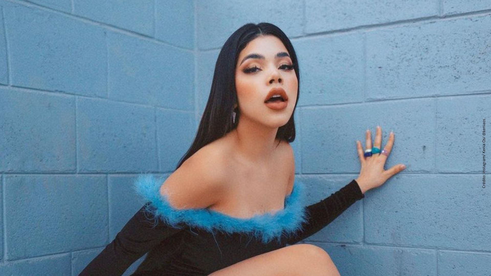
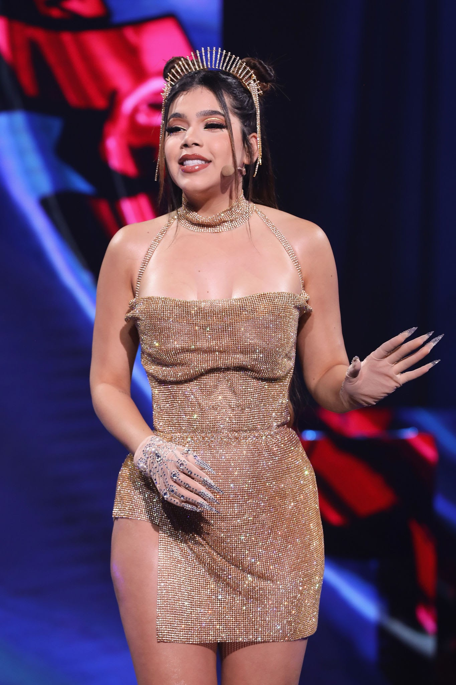

BIENVENID@S
Intoduccion
Kenia Guadalupe Flores Osuna (15 de julio de 1999), mejor conocida como Kenia Os es una Youtuber y cantante mexicana. Llego a YouTube en 2017 y pronto ganó reconocimiento siendo parte del Team JuKiLop, formado por Juan de Dios Pantoja y Kimberly Loaiza. Tras varias discusiones y polémicas dejo la crew e incursionó como cantante. En 2018 apareció su primer sencillo Por Siempre, seguido por su famoso distrack Kenia Roast Yourself. Su identidad fue suplantada en 2018 por el youtuber Jesus Dostubers.


PRIMEROS AÑOS
Nació el 15 de julio de 1999 en Mazatlán, México y su hermana menor es la también youtuber Eloisa Os. De pequeñas ambas tuvieron que soportar los abusos de su padre a su madre, algo que las marco y han compartido a través de redes en varias ocasiones. Antes de dar el salto a YouTube, Kenia era una estudiante común que en sus ratos libres trabajaba como maquilladora. Al terminar la secundaria, decidió a estudiar Mercadotecnia, sin embargo, sintió que esto no era lo suyo, por lo que dos meses más tarde abandonó.
Inicios en YouTube y el team Jukilop
En 2017, Kenia, decidió a abrir su canal en YouTube sin saber que esto le cambiaría la vida totalmente. Se inicio en la plataforma subiendo vlogs sobre estilo de vida, maquillaje, belleza y entretenimiento (retos, viajes, q&a y feats). Poco a poco fue ganado suscriptores y reconocimiento. Fue así como termino uniéndose al team JuKiLop, formado por Kimberly Loaiza y Juan de Dios Pantoja. Con estos creo contenido por un buen tiempo, sin embargo, los problemas empezaron y termino siendo expulsada por la pareja. Aunque fue sacada del Team JuKiLop, eso no la detuvo, en poco tiempo volvió a YouTube en solitario. A pesar de las críticas de los fans y de los encontrones que tuvo con sus excompañeros, Kenia continuó ganando seguidores tanto en YouTube como en Instagram (actualmente cuenta con 5,7 M de seguidores). Sin embargo, no todo fue color de rosa en 2018 su canal fue cerrado y su identidad suplantada por el también youtuber Jesus Dostubers (antes infotubers). Este se aprovechó del cierre del canal, para hacerse pasar por la youtuber y ganar con su identidad algo de dinero. Como si fuera poco, cuando ésta regreso aparento ser parte de su team para seguir ganando dinero. Aunque Kenia, se mostró reacia hablar sobre el tema, decidió finalmente desenmascararlo. Después de esto, Jesús, desapareció por un tempo de YouTube y las redes. Actualmente sigue subiendo contenido en su canal Team Dostubers.
 Kenia Os Música
Una vez superada la controversia, firmó contrato con la disquera Lizos Music e hizo su debut con el sencillo Por Siempre, lanzado el 17 de agosto de 2018. Mas tarde lanza su distrack contra Loaiza y Pantoja Kenia Roast Yourself y en 2019, aparecen 11:11 (con Kid Gallo), Energía, Mentiroso y Delito. Inicio el 2020 con Escríbeme y Diamantes, al lado de Gera MX. El 10 de abril lanzó Tercera Noche, su sencillo mas reciente.
las canciones mas reproducidas de kenias son: